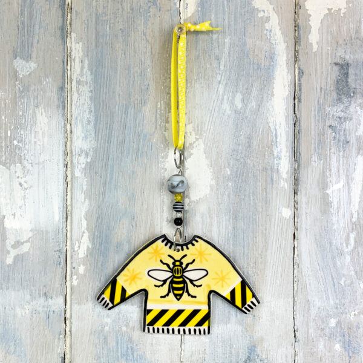

A handmade ceramic hanging decoration capturing Manchester Jumper. Each piece is individually shaped, painted and glazed in our Berkshire studio, with fine brushwork detail. Finished with hand-threaded ceramic beads and a ribbon for hanging.
Yellow ceramic hanging decoration of a Manchester-themed jumper. You can buy these directly from their website here.
their gift shop, Afflecks Arcade, 35 – 39 Oldham Street, Manchester M1 1JG